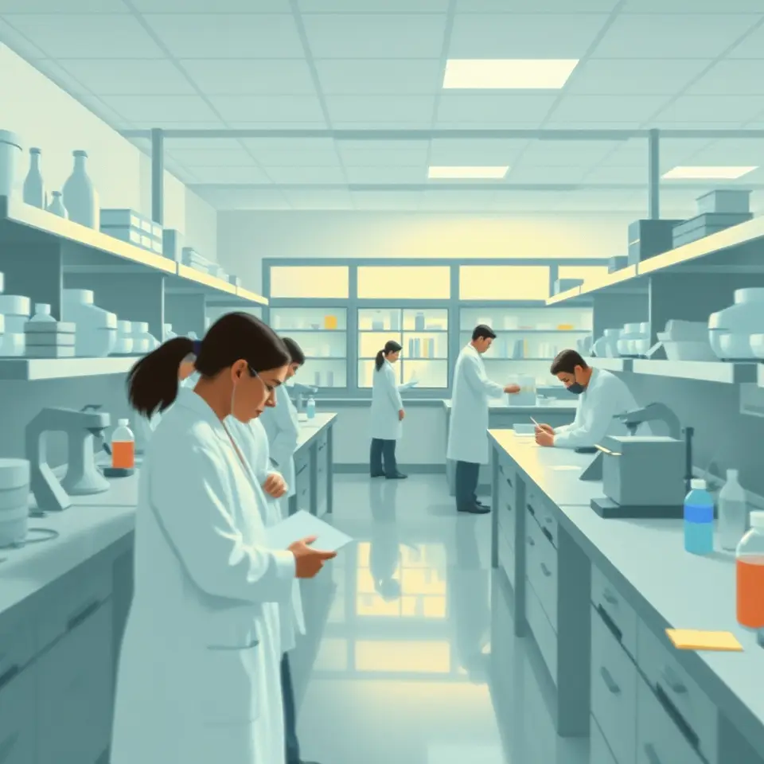
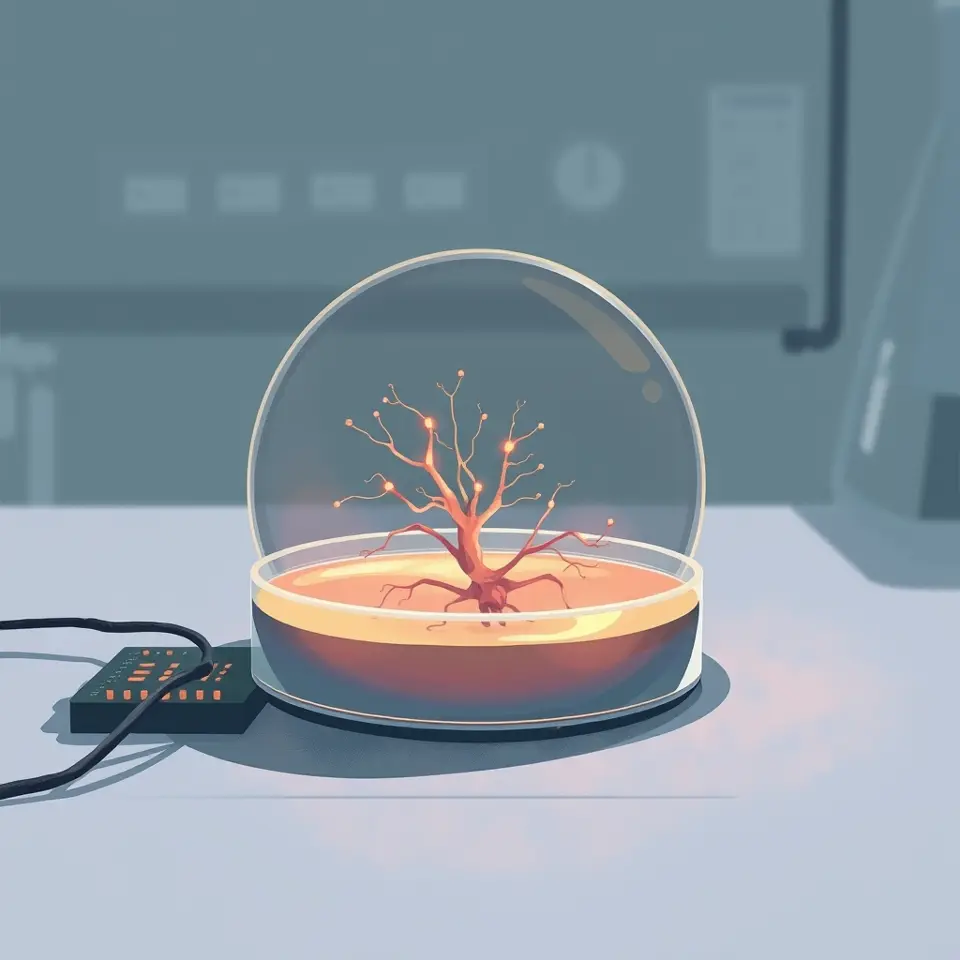
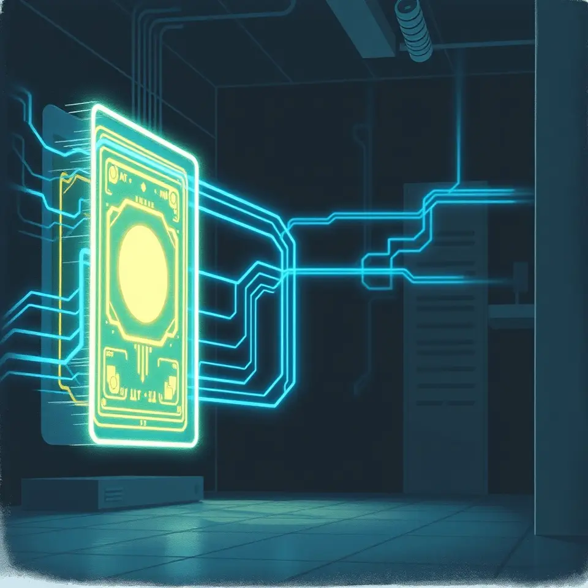

IT·과학
세무사 시험 차석 ‘형광펜’ 수험서 화제…‘AI 자수’ 나오자 “찐 수석”
[영상]거대 우주 태양광 발전소 들어설까…지구 밖에서 조립용 로봇 작동 성공

셰익스피어의 통찰과 플레밍의 발견, 모두 ‘관찰’에서 시작
셰익스피어의 인간 탐구와 플레밍의 페니실린 발견은 모두 끈질긴 관찰에서 출발했다는 분석이다.

스타십 15차 시험발사, 2단 회수 도전…1단은 추락
스페이스X가 스타십 15차 시험발사에서 1·2단 동시 회수를 처음 시도했으나 1단 회수에는 실패했다.
AI 안경으로 수능 수학 풀어보니 5문항 오답…부정행위 우려
유튜버 감스트가 AI 안경으로 수능 수학 문제를 풀어 30문항 중 5개를 틀렸다고 밝혔다.
AI 해킹에 망분리 완화 논의…금융당국 “AI로 막아야”
금융당국이 보안 목적 AI에 대한 망분리 규제 완화를 검토하는 가운데, 과징금 부과와 CISO 권한 강화를 담은 법 개정도 추진된다.

JP모건 "미국 휴머노이드 2030년 40만 대" 전망
JP모건은 미국 휴머노이드 생산이 2030년 30만~40만 대, 2035년 약 150만 대에 이를 것으로 내다봤다.
한국군 무인기 11만 대 계획에 중국 군부 경계
중국 군사 전문 매체가 한국군의 무인기 전력 확충 계획과 KAI의 유무인 편대비행을 주목했다.

AI 데이터센터 전기요금 부담, 미국·유럽 넘어 한국으로
미국 메릴랜드 주민들이 타 주 데이터센터 송전망 비용을 떠안을 처지에 놓였다.

스피커 구멍 없앤 아이패드 미니…화면 진동 방식 재부상
애플이 출시한 신형 아이패드 미니는 화면 바깥면을 진동시켜 소리를 내는 방식을 메인 스피커로 채택했다.
황 전 엔비디아 CEO, 세 번째 불륜 의혹 제기
로이터는 황 전 CEO가 엔비디아 내 다른 여성 직원과 내연 관계였다고 보도했다.
젠슨 황 엔비디아 CEO 사임…AI 동맹 불확실성 커져
젠슨 황 엔비디아 CEO가 사임하면서 국내 기업의 AI 협력과 공급망에 대한 우려가 커지고 있다.

삼성·젠몬 손잡은 AI 안경, 직접 착용해보니
삼성과 젠몬이 협력한 AI 안경을 직접 사용해본 체험 기사다.
중기부 '모두의 창업' 또 해킹, 모집 연기
중소벤처기업부의 '모두의 창업' 사업이 다시 해킹을 당했으며 앞서 모집도 연기된 바 있다.

TSMC 직원 개인정보 4만 6천여 건 온라인 매물로
TSMC 전·현직 직원 개인정보가 다크웹에 매물로 올라온 것으로 확인됐다.
중기부 2차 모두의 창업 참가자 818명 정보 유출
2차 모두의 창업 참가 지원 기업에서 창업자 818명의 개인정보가 유출된 것으로 확인됐다.
젠슨 황, 자신의 발언 논란과 우려 표명 관련 보도
젠슨 황과 관련된 발언 논란이 보도되며 AI 업계의 관심이 쏠리고 있다.

젠슨 황 "쓰레기 같은 놈" 자책…"그녀들이 걱정"
젠슨 황 엔비디아 CEO가 자책의 뜻을 드러내며 주변을 걱정했다는 보도가 나왔다.
엔비디아 젠슨 황 사퇴 보도, 국내 영향은
엔비디아 젠슨 황 사퇴 소식이 전해지며 국내 반도체 업계 영향에 관심이 모이고 있다.
카카오워크 해킹, 업무 정보 노출…‘종단간 암호화’ 무색
카카오워크가 해킹을 당해 업무 정보가 노출됐다는 보도가 나오며 종단간 암호화의 한계가 지적됐다.
챗GPT가 뒤집은 AI 전쟁, 이세돌과 대결한 시대와 달라졌다
이세돌 대국과 노벨상 수상 사례를 짚으며 챗GPT 이후 달라진 AI 경쟁 구도를 조명했다.
단 5주 만에 2400조원 증발한 엔비디아…돈 녹는 속도 유례없어
엔비디아의 시가총액이 단 5주 만에 약 2400조원 줄어드는 등 급락이 이어졌다.
젠슨 황 재산 192조 처분, 아내 허락 필요
젠슨 황 엔비디아 최고경영자의 재산 처분과 관련한 보도가 나왔다.

앨리스 황, 미국 제재 화웨이와도 연결…반도체 우회 공급 의혹
앨리스 황이 미국 제재 대상 화웨이와 연결돼 반도체 우회 공급 의혹이 제기됐다.

서동주 “비트코인 3개월 만에 3배…그 돈으로 집도 샀다”
서동주는 과거 가상자산 투자 경험을 밝혔으며, 수익률은 본인 진술로 독립 검증되지 않았다.
우주서 포착한 러시아 활화산, 소용돌이 구름 속 모습
우주에서 관측된 러시아 활화산과 주변 구름의 모습이 공개됐다.
구글, ‘제미나이 4 하이드로젠’ 출시…상위 모델 ‘아르곤’ 성능 추월
구글이 새 AI 모델 제미나이 4 하이드로젠을 내놓았고, 상위 모델 아르곤보다 성능이 높다고 소개됐다.

AI 이미지미·중 패권 경쟁 속 범중국계 과학기술인 70년
범중국계 과학기술인들이 미·중 패권 경쟁의 핵심 주역으로 조명됐다.

AI 이미지배양접시 속 미니 뇌, 차세대 초저전력 AI 대안 될까
배양접시에서 키운 미니 뇌가 초저전력 차세대 컴퓨팅 대안으로 주목받고 있다.
 AI 이미지
AI 이미지메모리 호황에 대만도 EUV 투자 본격화, 난야·윈본드 추격
메모리 반도체 호황을 맞아 대만 업체 난야와 윈본드가 EUV 투자에 나섰다.

마이크로소프트 아웃룩 대규모 접속 장애, 신고 13만 건
마이크로소프트 아웃룩에서 대규모 접속 장애가 발생해 관련 신고가 13만 건에 이르렀다.
강아지 산책시키는 ‘로봇 개’ 포착…“똥은 치우냐” 화제
강아지를 산책시키는 로봇 개의 모습이 포착돼 온라인에서 화제가 되고 있다.
스페이스X, 텍사스·애리조나 데이터센터 740억달러
스페이스X가 텍사스와 애리조나에 AI 슈퍼컴퓨팅 캠퍼스 2곳을 짓는 계획을 공개했다.
스마트폰 GPS·양자컴퓨터의 시작… 빛으로 원자를 얼린 과학자
빛으로 원자를 식히는 기술이 스마트폰 위치 정보와 양자컴퓨터 연구의 출발점이 됐다는 소개가 나왔다.
이터나퓨전, 24시간 연속운전 소형 핵융합로 도전
창업 6개월 차 딥테크 스타트업 이터나퓨전이 연속운전 핵융합로 개발을 추진하며 2027년 상반기 핵심 기술 검증을 계획하고 있다.
AI 모델 가중치 일부 삭제만으로 성능 향상 연구
뉴욕대와 캘거리대 공동 연구진이 대형언어모델 가중치의 극히 일부만 삭제해도 수학 추론 성능이 높아졌다고 발표했다.

AI 과학자, 인간의 발견 영역을 넓히다
AI가 스스로 연구를 수행하며 과학 발견의 범위를 확장하고 있다는 분석이다.
비행기처럼 우주선 재사용? 스페이스X, 통째 회수 나선다
스페이스X가 우주선을 비행기처럼 통째로 회수해 재사용하는 방안을 추진하는 것으로 보도됐다.
AI, 질병 단서를 30분 만에 찾아내
과학자가 1년 반에 걸쳐 찾은 질병 단서를 AI가 30분 만에 찾아낸 사례가 보도됐다.
코딩 문외한 미국 남성, AI로 나흘 만에 오픈월드 게임 제작
코딩 경험이 없는 미국 남성이 AI에 지시해 나흘 만에 대형 오픈월드 게임을 만들었다고 보도됐다.
AWS, 자체 AWS 에뮬레이터 출시
AWS가 자체 AWS 에뮬레이터를 만들었다는 소식이 기술 커뮤니티를 통해 전해졌다.
빗질만으로 탈모 관리?…신제품 빗 등장
빗질만으로 탈모를 관리한다고 소개된 신제품 빗이 등장했다.

처음엔 쓴맛 부담스러운 블랙커피, 왜 마실수록 좋아질까
블랙커피의 맛에 익숙해지는 과정을 다룬 기사로, 마실수록 선호가 높아지는 이유를 살핀다.

달에서 일할 사람 찾는다…연봉 2억2000만원
달에서 근무할 인력을 모집한다는 공고가 나오며 연봉 2억2000만원이 제시됐다.
NASA, 달 기지 건설 우주비행사 공개 모집
NASA가 달 기지 건설과 탐사를 맡을 우주비행사를 공개 모집하며 연봉은 약 2억 2000만원이다.
중국 연구진, 최저 온도 기록 경신
중국 연구진이 최저 온도 기록을 새로 갈아치웠다는 소식이 전해졌다.
영화 ‘마션’처럼 378일간 ‘모의 화성’에서 식물 재배와 생활
모의 화성 기지에서 378일간 생활하며 식물 재배를 진행한 실험 소식이 전해졌다.
숏폼 2주 경험 다룬 함영준 칼럼
조선일보 함영준 칼럼이 숏폼 이용 경험을 다뤘으나 본문은 확인되지 않았다.
지구 온난화 1.5도 방어선 턱밑…각지 예상치 90% 도달
지구 온난화가 1.5도 방어선에 가까워지고 있으며 일부 지역은 예상치의 90%에 도달했다.

인간의 속도, 우주의 시간
인간의 속도와 우주의 시간을 대비한 조선일보의 기획 기사다.
초가공식품, 최소가공식품과 영양 구성 같아도 혈당 더 오래 높아
영양 구성이 비슷해도 초가공식품은 최소가공식품보다 고혈당 상태가 더 오래 지속된다는 결과가 보도됐다.
PBS 폐지로 부처 간 사각지대에 놓인 출연연
PBS 폐지 이후 정부출연연구기관들이 부처 간 사각지대에서 방향을 잃었다는 진단이 나왔다.

AI 이미지양자컴퓨터, 에너지 적게 쓰고 AI 학습은 더 정교하게
양자컴퓨터가 에너지 소모는 줄이면서 AI 모델을 더 정교하게 학습시킬 수 있다는 주장이 나왔다.